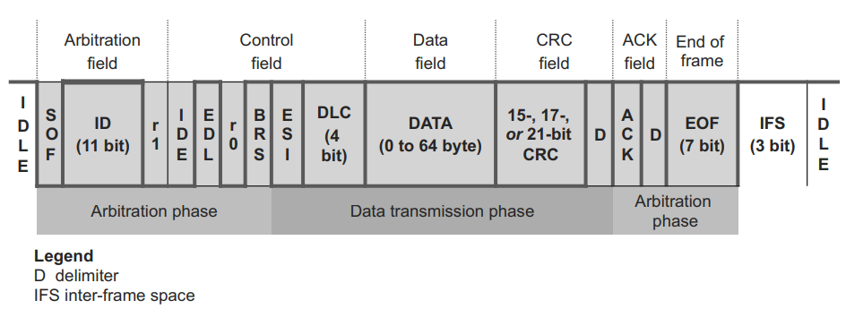
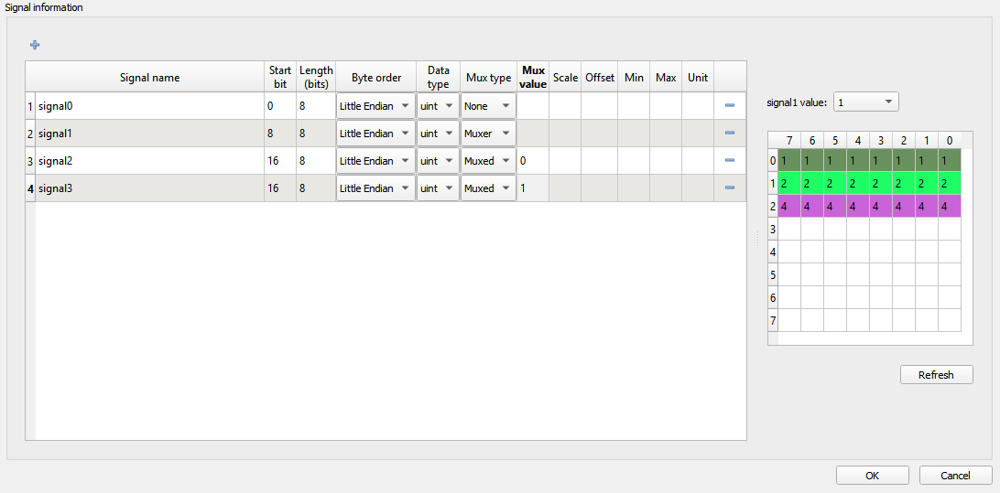
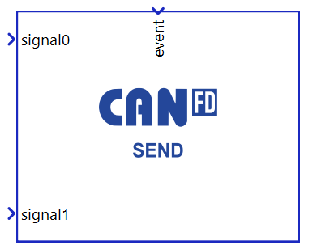
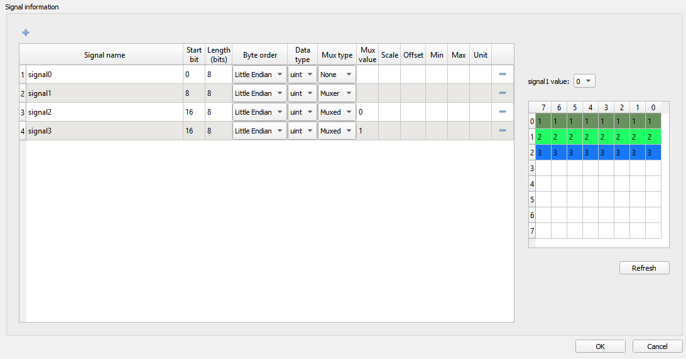
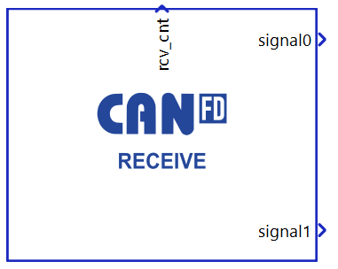
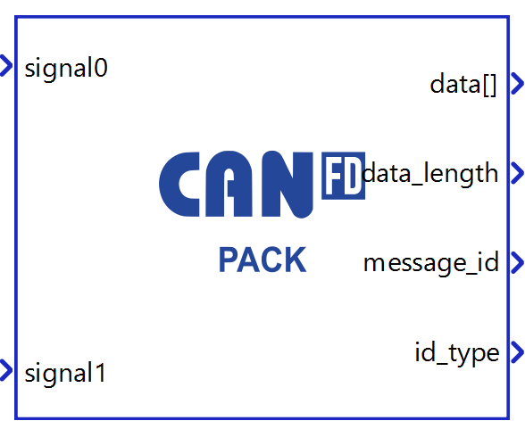
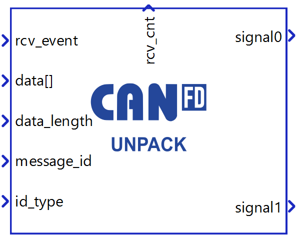

CAN FD Protocol
Description of the CAN FD protocol implementation in the Typhoon HIL toolchain.
CAN FD protocol introduction
CAN FD (Controller Area Network Flexible Data-Rate) is a data-communication protocol typically used for broadcasting sensor data and control information on 2 wire interconnections between different parts of electrical instruments or control systems. CAN FD is an extension to the original CAN bus protocol. It was developed to meet the need to increase the data transfer rate (up to 5 times faster with CAN FD) and support larger message frame sizes for use in modern automotive Electronic Control Units (ECU) and many other industry applications.
The primary difference between standard CAN (Controller Area Network) and CAN FD is the Flexible Data (FD). Using CAN FD, the Electronic Control Unit can switch to different data-rate and communicate with larger or smaller message sizes. Enhanced features in CAN FD include the capability to select and switch to a faster or slower data-rates, and to pack more data within the same CAN message, saving time when transporting it over the CAN network. Faster data speed and enhanced data capacity result in several system operational advantages compared to standard CAN. Using CAN FD, sensor and control data can be sent and received by the ECU software much quicker.
- Increased length - CAN FD supports up to 64 data bytes per data frame vs 8 data bytes for standard CAN. This reduces protocol overhead and leads to an improved protocol efficiency.
- Increased speed - CAN FD supports dual bit rates: The nominal (arbitration) bit - rate limited to 1 Mbit/s as in standard CAN - and the data bit-rate, which depends on the network topology/transceivers. In practice, data bit-rates of up to 5 Mbit/s are achievable.
- Better reliability - CAN FD uses an improved cyclic redundancy check (CRC) and the "protected stuff-bit counter", which lower the risk of undetected errors. This is vital in safety-critical applications, such as vehicles and industrial automation.
- Smooth transition - CAN FD and standard-CAN-only ECUs can be mixed under certain conditions. This allows for a gradual introduction of CAN FD nodes, greatly reducing costs and complexity for OEMs.

Messages are labeled by an identifier (ID), which can be 11 bit (Standard ID) or 29 bit (Extended ID), assigned to one or more nodes on the network. All nodes receive the message and perform a filtering operation. That is, each node executes an acceptance test on the identifier to determine if the message, and thus its content, is relevant to that particular node. Only the node(s) for which the message is relevant will process it. All others ignore the message.
The identifier has two more functions, as well. It contains data that specifies the priority of the message and it allows the hardware to arbitrate for the bus. That is, it’s used to determine which node gets to transmit if several nodes attempt to do so simultaneously. Message IDs must be unique in a single CAN FD network, otherwise two nodes would continue transmission beyond the end of the arbitration field (ID) causing an error. The lower the numerical ID, the higher the message priority.
CAN FD can transmit up to 64 bytes of data through a single CAN FD message, which is one of the main differences between CAN Bus and CAN FD. The DLC field, or Data Length Code, tells how many bytes of data are present in the Data Field.
CAN FD protocol in the Typhoon HIL toolchain
Currently, CAN FD functionality in Typhoon HIL is implemented either directly on the HIL device (supported by the following Typhoon HIL devices: HIL506 and HIL606) or through the ACE board (Automotive Communication Extender).
HIL506 and HIL606 have two separate CAN FD controllers. These two controllers can be connected to the CAN FD network through a standard 9-pin D-sub type male connector.
Information regarding the available ports for each HIL Simulator device is documented in their respective General Specifications section. The pinout for the CAN connector per HIL device is available here:
The connector pinout for the CAN FD controllers on the ACE board is described here: Automotive Communication Extender card pinouts.
CAN FD controllers on HIL devices are not terminated with any resistors. 120 Ohm termination resistors should be added as needed.
CAN FD controllers on the ACE board are terminated with 120 Ohm resistors.
Depending on whether the CAN FD controller is on the HIL device or the ACE board, each CAN FD controller can be configured using either the CAN FD Setup component or the ACE CAN Setup component.
- Standard components: The CAN FD Send and CAN FD Receive components provide a complete solution where signal conversion and network communication are handled within a single component. This approach is suitable for standard message transmission and reception scenarios.
- Modular components: The modular components separate the data
packing/unpacking operations from the actual transmission/reception:
- CAN FD Pack and CAN FD Unpack components handle conversion between physical signals and raw data.
- CAN FD Raw Send and CAN FD Raw Receive components handle raw data transmission and reception on the CAN network.
This separation provides access to the raw data before transmission or after reception, enabling custom data processing, manipulation, and various advanced testing scenarios.
Although the sending and receiving of 64 bit data is supported in the CAN FD protocol, all registers in a HIL device are 32 bits. This means the received data will be converted to 32 bit, and any sent 64 bit data will instead be packed and sent as 32 bit data.
Also, it is important to mention that handling of Remote frames is currently not supported.
CAN FD Setup

The CAN FD Setup component is shown in Figure 2. It is used to configure CAN FD controllers for each HIL device used in the model.
If CAN FD protocol is used, there must be exactly one CAN FD Setup component for each HIL device that uses CAN FD protocol.
- CAN1 baud rate (Nominal/Data)
- Nominal baud rate used during arbitration and control fields, and Data baud rate used during data and CRC fields for the CAN1 controller.
- CAN1 execution rate
- Execution rate at which the sending of messages is executed for the CAN1 controller.
- CAN2 baud rate (Nominal/Data)
- Nominal baud rate used during arbitration and control fields, and Data baud rate used during data and CRC fields for the CAN2 controller.
- CAN2 execution rate
- Execution rate at which the sending of messages is executed for the CAN2 controller.
- Execution rate
- Signal processing execution rate. Execution rate must match with the other components used in the model.
- The CAN FD Setup component features the two outputs, can1 and can2, that indicate the status of CAN1 and CAN2 controllers. These statuses indicate errors that occurred during communication or buffer conditions.
- CAN FD protocol operates with two bit rate phases: Nominal bit rate (used during arbitration and control fields) and Data bit rate (used during data field for faster transmission). Consequently, CAN FD status includes separate error detection for both phases.
- Each status corresponds to a specific bit in a binary number that is set
when the condition occurs and cleared when the condition is resolved. Status
bits are numbered from 0 (least significant bit) to 15, where bit 0
corresponds to position xxxx xxxx xxxx xxx1:
- Nominal Phase Errors (bits 0-6):
- xxxx xxxx xxxx xxx1 - NACK Error - No acknowledgement received during nominal bit rate phase.
- xxxx xxxx xxxx xx1x - NBIT0 Error - Recessive bit transmitted but dominant bit monitored during nominal phase.
- xxxx xxxx xxxx x1xx - NBIT1 Error - Dominant bit transmitted but recessive bit monitored during nominal phase.
- xxxx xxxx xxxx 1xxx - NSTUFF Error - Bit stuffing violation during nominal bit rate phase.
- xxxx xxxx xxx1 xxxx - NFORM Error - Frame format violation during nominal bit rate phase.
- xxxx xxxx xx1x xxxx - NCRC Error - CRC mismatch during nominal bit rate phase.
- xxxx xxxx x1xx xxxx - TXBO Error - Controller disconnected from bus due to excessive errors.
- Data Phase Errors (bits 7-11):
- Bit monitoring mismatch:
- xxxx xxxx 1xxx xxxx - DBIT0 Error - Recessive bit transmitted but dominant bit monitored during data phase.
- xxxx xxx1 xxxx xxxx - DBIT1 Error - Dominant bit transmitted but recessive bit monitored during data phase.
- xxxx xx1x xxxx xxxx - DSTUFF Error - Bit stuffing violation during data bit rate phase.
- xxxx x1xx xxxx xxxx - DFORM Error - Frame format violation during data bit rate phase.
- xxxx 1xxx xxxx xxxx - DCRC Error - CRC mismatch during data bit rate phase.
- Bit monitoring mismatch:
- Error State and Buffer Statuses (bits
12-15):
- xxx1 xxxx xxxx xxxx - ESI - Error State Indicator from received frame.
- xx1x xxxx xxxx xxxx - RX FIFO Overflow - Receive buffer full, incoming message lost.
- x1xx xxxx xxxx xxxx - TX FIFO Full - Transmit buffer full, cannot queue additional messages.
- 1xxx xxxx xxxx xxxx - TX FIFO Transmitting - This occurs when attempting to send a new message while a previous transmission is in progress. New messages are queued if FIFO space is available, otherwise they are discarded to prevent data corruption.
- Nominal Phase Errors (bits 0-6):
CAN FD Send

The CAN FD Send component is shown in Figure 3. It is used to specify the format and values of a single CAN FD message to be sent.
- CAN controller
- Choose which controller sends the message. CAN1 and CAN2 are the default options for message transmission.
- If the ACE CAN Setup component with the CAN FD protocol type is present in the schematic, additional options to select ACEy - CANx controllers will appear (where y is the selected Device ID and x is the index of the CAN FD controller).
- Data input
- Choose if the message is defined manually through the Dialog window, or if the message is defined through a configuration file.
- Configuration file
- Choose a configuration file to parse. The file can be in DBC or ARXML format.
- Choose message
- Choose message from a configuration file to simulate.
- Message ID
- Specifies the message identifier value. The value for the ID can be
in range 0 - 2N - 1, where N is 11 or 29, depending on
the selected ID typeNote: The identifier value must be unique in a CAN network. While it is possible to specify the same ID values for different CAN controllers (both messages transmitted through CAN1 and CAN2 can have the same ID), connecting these controllers to the same network may cause unexpected errors in communication.
- Specifies the message identifier value. The value for the ID can be
in range 0 - 2N - 1, where N is 11 or 29, depending on
the selected ID type
- Identifier type
- Defines the identifier type. Identifier length can be:
- 11 bit (CAN 2.0A) - used to create messages with a standard, 11 bit, identifier.
- 29 bit (CAN 2.0B) - used to create messages with an extended, 29 bit, identifier.
- Defines the identifier type. Identifier length can be:
- Data length
- Specifies the length of message payload in bytes (8 bits). Length can be in range from 1 to 64.
- Transmit message
- Specifies the condition when the message is transmitted. The
condition can be:
- On event - an additional event terminal is created on the component that triggers sending. The event change is checked on the CANx execution rate defined in the CAN FD Setup component.
- On timer - message is transmitted periodically with the specified period time. The period time must be an integer multiplier of the CANx execution rate defined in the CAN FD Setup component.
- Specifies the condition when the message is transmitted. The
condition can be:
- Transmit period
- Available if Transmit message is set to On timer.
- Specifies the period of message sending.
Multiple signals can be transmitted through a single CAN FD message. With the + (plus) button, a new signal is added to the signal table in the CAN FD Send dialog window. All signals are packed in one message in the manner defined by the signal parameters. The message preview can be seen on the right of the table.
Figure 4 shows how the signals can be defined.

- Signal name - name of the signal that is shown on the CAN FD Send component
- Start bit - the start bit of the signal in the CAN FD message
- Length - length of the signal in bits
- Byte order - represents the byte order of the signal. Signal can be defined as Little or Big Endian
- Data type - signal data type. Signal can be defined as uint, int, or real
- Mux type - choose between None, Muxer, and Muxed to define if the multiplexer is used when sending messages. If the type is None, the signal will behave normally and it will always be packed in the message. If the type is Muxer, that signal will be packed in the message, and its value will be used as a multiplexer to determine which Muxed signal will be packed as well. If the type is Muxed, that signal will be packed in the message only when the Muxer value is the same as that signal's Mux value.
- Mux value - if the signal is defined as Muxed, the Mux value define when that signal will be packed. If multiple signals are overlapped, the Mux value will be used to define which signal is packed.
- Scale - define the scale performed on the signal value
- Offset - define the offset performed on the signal value
- Min - define the minimum signal value
- Max - define the maximum signal value
- Unit - define signal units
The Start bit value specifies the position of the signal within the data field of the frame. For signals with byte order Little Endian the position of the least significant bit is given. For signals with byte order Big Endian the position of the most significant bit is given. The bits are counted in a saw-tooth manner.
The factor and offset define the linear conversion to convert a signal's coded value into that signal's physical value and vice versa:
coded_value = (physical_value - offset) / scale
physical_value = coded_value * scale + offset
The minimum and maximum define the range of valid physical values of the signal.
After the signals are added to the list, the CAN FD Send component looks like it does in Figure 5. The signal ports can be connected to any Signal Processing part of the model.

There can exist numerous CAN FD Send components in the schematic and every such component describes one CAN FD message to be sent. When adding additional CAN FD Send components to the model for sending multiple messages, you must ensure that all messages have unique IDs.
CAN FD Receive

The CAN FD Receive component is shown in Figure 6. It is used to unpack a message received through a CAN FD network.
- CAN controller
- Choose which controller receives the message. CAN1 and CAN2 are the default options for message transmission.
- If the ACE CAN Setup component with the CAN FD protocol type is present in the schematic, additional options to select ACEy - CANx controllers will appear (where y is the selected Device ID and x is the index of the CAN FD controller).
- Data input
- Choose if the message is defined manually through the Dialog window, or if the message is defined through a configuration file.
- Configuration file
- Choose a configuration file to parse. The file can be in DBC or ARXML format.
- Choose message
- Choose message from a configuration file to simulate.
- Message ID
- Specify the message identifier value. The value for an identifier is in the range of 0 – 2N - 1, where N is 11 or 29, depending on the selected identifier type. All messages in the network are filtered and only the message with an identifier value equal to the value defined in the CAN Bus Receive component is parsed.
- Identifier type
- Defines the identifier type. Identifier length can be:
- 11 bit (CAN 2.0A) - used to receive messages with a standard, 11 bit, identifier.
- 29 bit (CAN 2.0B) - used to receive messages with an extended, 29 bit, identifier.
- Defines the identifier type. Identifier length can be:
- Data length
- Specify the length of the payload in bytes (8 bits). Length can be in range a from 1 to 64.
- Execution rate
- Signal processing execution rate. Execution rate must match with the other components used in the model.
With the + (plus) button, a new signal is added to the signal table in the CAN FD Receive dialog window. All signals are unpacked in a manner defined by the signal parameters.
Figure 7 shows how the signals can be defined.

- Signal name - name of the signal that is shown on the CAN FD Receive component
- Start bit - the start bit of the signal in the CAN FD message
- Length - length of the signal in bits
- Byte order - represents the byte order of the signal. Signal can be defined as Little or Big Endian
- Data type - signal data type. Signal can be defined as uint, int, or real
- Mux type - choose between None, Muxer, and Muxed to define if the multiplexer is used when decoding messages.
- Mux value - if the signal is defined as Muxed, the Mux value defines when that signal will be unpacked.
- Scale - define the scale performed on the signal value
- Offset - define the offset performed on the signal value
- Min - define the minimum signal value
- Max - define the maximum signal value
- Unit - define signal units
The Start bit value specifies the position of the signal within the data field of the frame. For signals with byte order Little Endian the position of the least significant bit is given. For signals with byte order Big Endian the position of the most significant bit is given. The bits are counted in a saw-tooth manner.
The factor and offset define the linear conversion to convert a signal's coded value into that signal's physical value and vice versa:
coded_value = (physical_value - offset) / scale
physical_value = coded_value * scale + offset
The minimum and maximum define the range of valid physical values of the signal.
After the signals are added to the list, the CAN FD Receive component looks as it does in Figure 8. The signal ports can be connected to any Signal Processing part of the model.

There can exist numerous CAN FD Receive components in the schematic and every such component is used to receive a CAN FD message with the defined ID value. Messages that have an ID value that does not mach any ID value defined in CAN FD Receive components are ignored.
The rcv_cnt value increases by 1 every time a new message is received.
CAN FD Pack

The CAN FD Pack component is shown in Figure 9. It is used to convert physical signals into raw data ready for CAN network transmission. The component takes multiple signal inputs, packs them into a CAN FD message format according to the specified configuration, and provides the message information at the output ports.
- Data input
- Choose if the message is defined manually through the Dialog window, or if the message is defined through a configuration file.
- Configuration file
- Choose a configuration file to parse. The file can be in DBC or ARXML format.
- Choose message
- Choose message from a configuration file to simulate.
- Message ID
- Specifies the message identifier value. The value for the ID can be
in range 0 - 2N - 1, where N is 11 or 29, depending on
the selected ID type.Note: The identifier value must be unique in a CAN network. While it is possible to specify the same ID values for different CAN controllers (both messages transmitted through CAN1 and CAN2 can have the same ID), connecting these controllers to the same network may cause unexpected errors in communication.
- Specifies the message identifier value. The value for the ID can be
in range 0 - 2N - 1, where N is 11 or 29, depending on
the selected ID type.
- Identifier type
- Defines the identifier type. Identifier length can be:
- 11 bit (CAN 2.0A) - used to create messages with a standard, 11 bit, identifier.
- 29 bit (CAN 2.0B) - used to create messages with an extended, 29 bit, identifier.
- Defines the identifier type. Identifier length can be:
- Data length
- Specifies the length of message payload in bytes.
- Valid lengths: 1-8, 12, 16, 20, 24, 32, 48, and 64 bytes.
- Execution rate
- Signal processing execution rate. Execution rate must match with the other components used in the model.
- data[]
- Memory address where the packed raw data is stored. The raw data can be accessed for custom modifications using C function or passed directly to the CAN FD Raw Send component for transmission.
- data_length
- The length of the packed CAN FD message payload in bytes.
- Valid lengths: 1-8, 12, 16, 20, 24, 32, 48, and 64 bytes.
- message_id
- The message identifier value for the CAN FD message.
- id_type
- The identifier type: 0 for Standard ID (11-bit), 1 for Extended ID (29-bit).
Multiple signals can be transmitted through a single CAN FD message. With the + (plus) button, a new signal is added to the signal table in the CAN FD Pack dialog window. All signals are packed in one message in the manner defined by the signal parameters. The message preview can be seen on the right of the table.
Figure 10 shows how the signals can be defined.
- Signal name - name of the signal that is shown on the CAN FD Pack component
- Start bit - the start bit of the signal in the CAN FD message
- Length - length of the signal in bits
- Byte order - represents the byte order of the signal. Signal can be defined as Little or Big Endian
- Data type - signal data type. Signal can be defined as uint, int, or real
- Mux type - choose between None, Muxer, and Muxed to define if the multiplexer is used when sending messages. If the type is None, the signal will behave normally and it will always be packed in the message. If the type is Muxer, that signal will be packed in the message, and its value will be used as a multiplexer to determine which Muxed signal will be packed as well. If the type is Muxed, that signal will be packed in the message only when the Muxer value is the same as that signal's Mux value.
- Mux value - if the signal is defined as Muxed, the Mux value define when that signal will be packed. If multiple signals are overlapped, the Mux value will be used to define which signal is packed.
- Scale - define the scale performed on the signal value
- Offset - define the offset performed on the signal value
- Min - define the minimum signal value
- Max - define the maximum signal value
- Unit - define signal units
The Start bit value specifies the position of the signal within the data field of the frame. For signals with byte order Little Endian the position of the least significant bit is given. For signals with byte order Big Endian the position of the most significant bit is given. The bits are counted in a saw-tooth manner.
The factor and offset define the linear conversion to convert a signal's coded value into that signal's physical value and vice versa:
coded_value = (physical_value - offset) / scale
physical_value = coded_value * scale + offset
The minimum and maximum define the range of valid physical values of the signal.
After the signals are added to the list, the CAN FD Pack component looks like it does in Figure 11. The signal ports can be connected to any Signal Processing part of the model.

CAN FD Unpack

The CAN FD Unpack component is shown in Figure 12. It is used to convert raw data received from the CAN network into physical signal values. When triggered by the rcv_event input, the component checks if the received message parameters (data_length, message_id and id_type) match the message definition specified in the component properties. If the parameters match, the raw data is unpacked and converted into physical signal values provided at the output ports.
- Data input
- Choose if the message is defined manually through the Dialog window, or if the message is defined through a configuration file.
- Configuration file
- Choose a configuration file to parse. The file can be in DBC or ARXML format.
- Choose message
- Choose message from a configuration file to simulate.
- Message ID
- Specifies the message identifier value. The value for the ID can be
in range 0 - 2N - 1, where N is 11 or 29, depending on
the selected ID type.Note: The identifier value must be unique in a CAN network. While it is possible to specify the same ID values for different CAN controllers (both messages transmitted through CAN1 and CAN2 can have the same ID), connecting these controllers to the same network may cause unexpected errors in communication.
- Specifies the message identifier value. The value for the ID can be
in range 0 - 2N - 1, where N is 11 or 29, depending on
the selected ID type.
- Identifier type
- Defines the identifier type. Identifier length can be:
- 11 bit (CAN 2.0A) - used to create messages with a standard, 11 bit, identifier.
- 29 bit (CAN 2.0B) - used to create messages with an extended, 29 bit, identifier.
- Defines the identifier type. Identifier length can be:
- Data length
- Specifies the length of message payload in bytes.
- Valid lengths: 1-8, 12, 16, 20, 24, 32, 48, and 64 bytes.
- Execution rate
- Signal processing execution rate. Execution rate must match with the other components used in the model.
- rcv_event
- Event signal that triggers data conversion when a new message is received.
- data[]
- Memory address where the received raw data is stored.
- data_length
- The length of the received CAN FD message in bytes.
- Valid lengths: 1-8, 12, 16, 20, 24, 32, 48, and 64 bytes.
- message_id
- The message identifier value of the received message.
- id_type
- The identifier type: 0 for Standard ID (11-bit), 1 for Extended ID (29-bit).
- rcv_cnt
- Reception counter that increments by 1 each time a message is successfully received and unpacked.
With the + (plus) button, a new signal is added to the signal table in the CAN FD Unpack dialog window. All signals are unpacked in a manner defined by the signal parameters.
Figure 13 shows how the signals can be defined.
- Signal name - name of the signal that is shown on the CAN FD Unpack component
- Start bit - the start bit of the signal in the CAN FD message
- Length - length of the signal in bits
- Byte order - represents the byte order of the signal. Signal can be defined as Little or Big Endian
- Data type - signal data type. Signal can be defined as uint, int, or real
- Mux type - choose between None, Muxer, and Muxed to define if the multiplexer is used when decoding messages.
- Mux value - if the signal is defined as Muxed, the Mux value defines when that signal will be unpacked.
- Scale - define the scale performed on the signal value
- Offset - define the offset performed on the signal value
- Min - define the minimum signal value
- Max - define the maximum signal value
- Unit - define signal units
The Start bit value specifies the position of the signal within the data field of the frame. For signals with byte order Little Endian the position of the least significant bit is given. For signals with byte order Big Endian the position of the most significant bit is given. The bits are counted in a saw-tooth manner.
The factor and offset define the linear conversion to convert a signal's coded value into that signal's physical value and vice versa:
coded_value = (physical_value - offset) / scale
physical_value = coded_value * scale + offset
The minimum and maximum define the range of valid physical values of the signal.
After the signals are added to the list, the CAN FD Unpack component looks as it does in Figure 14. The signal ports can be connected to any Signal Processing part of the model.

CAN FD Raw Send

The CAN FD Raw Send component is shown in Figure 15. It is used to transmit raw data to the CAN network. The component receives a memory address where the raw data buffer is stored, along with the message parameters (data length, message ID, and ID type) through its input ports, and sends them to the specified CAN controller based on the configured transmit type.
- CAN controller
- Choose which controller sends the message. CAN1 and CAN2 are the default options for message transmission.
- Transmit message
- Specifies the condition when the message is transmitted. The
condition can be:
- On event - an additional event terminal is created on the component that triggers sending.
- On timer - message is transmitted periodically with the specified period time. The period time must be an integer multiplier of the CANx execution rate defined in the CAN FD Setup component.
- Specifies the condition when the message is transmitted. The
condition can be:
- Transmit period
- Available if Transmit message is set to On timer.
- Specifies the period of message sending.
- data[]
- Memory address where the data being sent is stored. The data can be packed using the CAN FD Pack component and/or modified using C functions.
- data_length
- The length of the CAN FD message payload in bytes.
- The CAN FD protocol supports specific payload lengths: 0-8, 12, 16, 20, 24, 32, 48, and 64 bytes. Values outside this range are automatically rounded up to the next valid length.
- message_id
- The message identifier value for the CAN FD message.
- id_type
- The identifier type: 0 for Standard ID (11-bit), 1 for Extended ID (29-bit).
- event
- Available when Transmit type is set to On event.
- Event signal that triggers message transmission. The event change is checked on the CANx execution rate defined in the CAN FD Setup component.
CAN FD Raw Receive

The CAN FD Raw Receive component is shown in Figure 16. It is used to receive raw data from the CAN network. For each received message, the component writes the data to a memory address and provides the message parameters at its output ports, including the data memory address, data length, message ID, and ID type.
- CAN controller
- Choose which controller sends the message. CAN1 and CAN2 are the default options for message transmission.
- Execution rate
- Signal processing execution rate. Execution rate must match with the
other components used in the model.Note: If message loss occurs when receiving multiple messages simultaneously, reducing the execution rate value (resulting in more frequent signal processing) may help resolve the issue.
- Signal processing execution rate. Execution rate must match with the
other components used in the model.
- data[]
- Memory address where the received raw data is stored. The data can be accessed and modified using C function and/or passed to the CAN FD Unpack component.
- data_length
- The length of the received CAN FD message payload in bytes.
- The CAN FD protocol supports specific payload lengths: 0-8, 12, 16, 20, 24, 32, 48, and 64 bytes.
- message_id
- The message identifier value of the received message.
- id_type
- The identifier type: 0 for Standard ID (11-bit), 1 for Extended ID (29-bit).
- rcv_cnt
- Reception counter that increments by 1 for each received message.
RAM overflow prevention and FIFO size calculation
Due to the RAM limitation of 2048 bytes, the FIFO buffer size needs to be calculated to prevent overflow. The calculated FIFO size limits the number of components that can simultaneously send or receive messages without data loss on a single controller. FIFO sizes for sending and receiving are calculated based on whether both the Send and Receive components are used simultaneously on the same controller or just one:
The Send and Receive components use the same CAN FD controller. The formula to calculate the maximum FIFO size applies to both Send and Receive components:
-
Only the Send or Receive components use the same CAN FD controller. The formula to calculate the maximum FIFO size applies to both Send and Receive components:
In both cases, if fifo_size_max exceeds 32, it is limited to 32 to stay within the FIFO size limitation [1].
Formula parameters:
- total_ram: amount of RAM available for the CAN FD controller (i.e. 2048 bytes).
- data_length: maximum data length of all used CAN FD Send/Receive components on single controller (64 bytes for Raw components).
- meta_data_length: length of any metadata for each message, such as headers or additional control information in bytes. Default value is 20 bytes.
Using configuration files to specify CAN messages
CAN Bus Send/Receive, CAN FD Send/Receive and CAN FD Pack/Unpack components can import DBC or ARXML files to define the messages. The principle is the same for all components and it will be demonstrated only on the CAN Bus Send component.
To load the configuration file, you must choose Configuration file as the Data input property and navigate to the desired file using the Choose file button. If the file is parsed correctly, the Choose message combo box will be populated with the message names from the file. Choosing different messages will change the message and signal parameters in the dialog. An example is shown in Figure 17.

When using DBC or ARXML files to define CAN messages, all message and signal parameters are disabled for editing. If the Data input is changed to Dialog window, the parameters will be enabled for editing, but if the Data input is subsequently changed back to Configuration file, the parameters will be changed back to the values from the configuration file.
Changing component property values using Schematic API
The custom component dialog is designed to easily define CAN message parameters. Changing these values is also possible using standard Schematic API functions but in a modified way. Namely, all properties except Transmit message and Signal information are changed in the standard way, where Transmit message is specified as a Python dictionary type and Request information must be specified as a list of Python dictionary types.
| Field name | Allowed values |
|---|---|
| "On event" | True, False |
| "On timer" | True, False |
| Field name | Allowed values |
|---|---|
| "name" | ASCII string |
| "start_bit" | 0 - 63 |
| "length" | 1 - 64 |
| "byte_order" | "Little Endian", "Big Endian" |
| "data_type" | "int", "uint", "real" |
| "mux_type" | "None", "Muxer", "Muxed" |
| "mux_val" | positive integer |
| "scale" | real number |
| "offset" | real number |
| "min" | real number |
| "max" | real number |
| "unit" | ASCII string |
transmit_type = {
"On event": True,
"On timer": False
}
mdl.set_property_value(mdl.prop(can_component, "transmit_type"), transmit_type)
signals = [
{"name": "signal0", "start_bit": 0, "length": 8, "byte_order": "Little Endian", "data_type": "uint", "mux_type": "None"},
{"name": "signal1", "start_bit": 8, "length": 8, "byte_order": "Little Endian", "data_type": "uint", "mux_type": "Muxer"},
{"name": "signal2", "start_bit": 16, "length": 8, "byte_order": "Little Endian", "data_type": "uint", "mux_type": "Muxed", "mux_val": "0"},
{"name": "signal3", "start_bit": 16, "length": 8, "byte_order": "Little Endian", "data_type": "uint", "mux_type": "Muxed", "mux_val": "1"}
]
mdl.set_property_value(mdl.prop(can_component, "signals"), signals)dbc_file_path = r"C\dbc_files\ford_fusion_2018_pt.dbc"
mdl.set_property_value(mdl.prop(can_component, "file_path"), dbc_file_path)
mdl.set_property_value(mdl.prop(can_component, "choose_message"), "Lane_Keep_Assist_Control")CAN execution rates explained
- Execution rate
- CANx controller execution rate
- CANx baud rate
- Transmit period
This section aims to provide a clarification for each of these values and how they relate to each other.
First of all, it is important to distinguish two aspects in all models that use CAN communication protocol: the Signal Processing aspect, and the processing of the CAN communication protocol itself. During model compilation, all Signal Processing components on the schematic are combined in one application that is executed on one CPU core. On the other hand, all CAN components (even though they are a part of the Signal Processing library) are combined in a separate application that is executed on a different CPU core. These two applications are two different entities.
All Signal Processing components (including the CAN components) have the Execution rate property. All components that are connected and perform a logical function share the same execution rate value. The execution rate value defines how often this function is performed.
The CANx controller execution rate has the exact same function, but is specific to the CAN application. It defines how often the CAN function is called.
Each CAN Send component has a Transmit period property that defines how often that message is sent to the network. The Transmit period and the CANx controller execution rate are in direct correlation to each other in a way that the CANx controller execution rate serves as a granularity value for Transmit period. In other words, if the CANx controller execution rate is set to 1 ms, the Transmit period can only be an integer multiple of 1 ms, that is N*1 ms. Similar, if the CANx controller execution rate is set to 3 ms, the Transmit period can only have a value of N*3 ms.
Baud rate is the only value that is defined by the CAN standard. This value is expressed in bits/s and defines how quickly the message is relayed between two CAN controllers. The difference between the Transmit period and the baud rate can be easily illustrated by the example of a metronome. Metronomes periodically makes a click sound (Transmit period), but that click travels by the speed of sound to the listener (baud rate).
Figure 18 illustrates all that was explained above.

Virtual HIL support
Virtual HIL currently does not support this protocol. When using a non-real-time environment (e.g. when running the model on a local computer), inputs to this component will be discarded and outputs from this component will be zeroed.
References
- Microchip Technology Inc., "MCP251XXFD CAN-FD Controller Module Family Reference Manual", 2017-2018, pp. 22